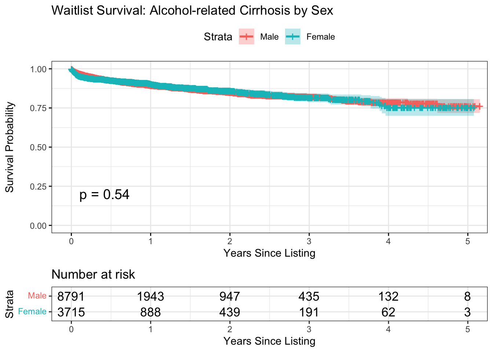
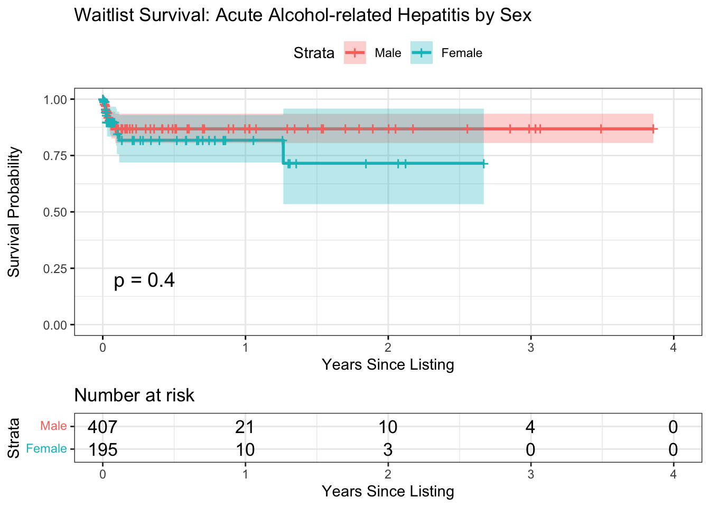

| Characteristic | Overall N = 13,1081 |
Acute Alcohol-related Hepatitis N = 6021 |
Alcohol-related Cirrhosis N = 12,5061 |
p-value2 |
|---|---|---|---|---|
| Sex | 0.2 | |||
| Male | 9,198 (70%) | 407 (68%) | 8,791 (70%) | |
| Female | 3,910 (30%) | 195 (32%) | 3,715 (30%) | |
| Age at Listing (years) | 53 (45, 60) | 41 (35, 50) | 54 (46, 61) | <0.001 |
| MELD at Listing | 21 (14, 30) | 37 (30, 40) | 20 (14, 29) | <0.001 |
| Race/Ethnicity | <0.001 | |||
| Non-Hispanic White | 9,711 (74%) | 467 (78%) | 9,244 (74%) | |
| Non-Hispanic Black | 558 (4.3%) | 23 (3.8%) | 535 (4.3%) | |
| Non-Hispanic Other | 518 (4.0%) | 49 (8.1%) | 469 (3.8%) | |
| Hispanic | 2,321 (18%) | 63 (10%) | 2,258 (18%) | |
| Waitlist Death | 862 (6.6%) | 30 (5.0%) | 832 (6.7%) | 0.11 |
| Follow-up Time (years) | 0.14 (0.02, 0.83) | 0.01 (0.01, 0.04) | 0.16 (0.02, 0.88) | <0.001 |
| 1 n (%); Median (Q1, Q3) | ||||
| 2 Pearson’s Chi-squared test; Wilcoxon rank sum test | ||||
| Characteristic | Overall N = 13,1081 |
Sex
|
p-value2 | |
|---|---|---|---|---|
| Male N = 9,1981 |
Female N = 3,9101 |
|||
| Age at Listing (years) | 53 (45, 60) | 54 (46, 61) | 52 (42, 59) | <0.001 |
| MELD at Listing | 21 (14, 30) | 20 (14, 30) | 22 (15, 31) | <0.001 |
| Race/Ethnicity | <0.001 | |||
| Non-Hispanic White | 9,711 (74%) | 6,679 (73%) | 3,032 (78%) | |
| Non-Hispanic Black | 558 (4.3%) | 321 (3.5%) | 237 (6.1%) | |
| Non-Hispanic Other | 518 (4.0%) | 367 (4.0%) | 151 (3.9%) | |
| Hispanic | 2,321 (18%) | 1,831 (20%) | 490 (13%) | |
| Diagnosis | 0.2 | |||
| Acute Alcohol-related Hepatitis | 602 (4.6%) | 407 (4.4%) | 195 (5.0%) | |
| Alcohol-related Cirrhosis | 12,506 (95%) | 8,791 (96%) | 3,715 (95%) | |
| Waitlist Death | 862 (6.6%) | 592 (6.4%) | 270 (6.9%) | 0.3 |
| Follow-up Time (years) | 0.14 (0.02, 0.83) | 0.14 (0.02, 0.81) | 0.12 (0.02, 0.90) | 0.7 |
| 1 Median (Q1, Q3); n (%) | ||||
| 2 Wilcoxon rank sum test; Pearson’s Chi-squared test | ||||
| Characteristic | Overall N = 12,5061 |
Sex
|
p-value2 | |
|---|---|---|---|---|
| Male N = 8,7911 |
Female N = 3,7151 |
|||
| Age at Listing (years) | 54 (46, 61) | 55 (47, 61) | 52 (43, 59) | <0.001 |
| MELD at Listing | 20 (14, 29) | 19 (14, 28) | 21 (15, 30) | <0.001 |
| Race/Ethnicity | <0.001 | |||
| Non-Hispanic White | 9,244 (74%) | 6,364 (72%) | 2,880 (78%) | |
| Non-Hispanic Black | 535 (4.3%) | 311 (3.5%) | 224 (6.0%) | |
| Non-Hispanic Other | 469 (3.8%) | 332 (3.8%) | 137 (3.7%) | |
| Hispanic | 2,258 (18%) | 1,784 (20%) | 474 (13%) | |
| Waitlist Death | 832 (6.7%) | 575 (6.5%) | 257 (6.9%) | 0.4 |
| Follow-up Time (years) | 0.16 (0.02, 0.88) | 0.17 (0.02, 0.85) | 0.15 (0.02, 0.95) | 0.7 |
| 1 Median (Q1, Q3); n (%) | ||||
| 2 Wilcoxon rank sum test; Pearson’s Chi-squared test | ||||
| Characteristic | Overall N = 6021 |
Sex
|
p-value2 | |
|---|---|---|---|---|
| Male N = 4071 |
Female N = 1951 |
|||
| Age at Listing (years) | 41 (35, 50) | 40 (34, 50) | 42 (35, 50) | 0.4 |
| MELD at Listing | 37 (30, 40) | 37 (31, 40) | 35 (27, 40) | 0.002 |
| Race/Ethnicity | 0.049 | |||
| Non-Hispanic White | 467 (78%) | 315 (77%) | 152 (78%) | |
| Non-Hispanic Black | 23 (3.8%) | 10 (2.5%) | 13 (6.7%) | |
| Non-Hispanic Other | 49 (8.1%) | 35 (8.6%) | 14 (7.2%) | |
| Hispanic | 63 (10%) | 47 (12%) | 16 (8.2%) | |
| Waitlist Death | 30 (5.0%) | 17 (4.2%) | 13 (6.7%) | 0.2 |
| Follow-up Time (years) | 0.01 (0.01, 0.04) | 0.01 (0.01, 0.03) | 0.01 (0.01, 0.04) | 0.073 |
| 1 Median (Q1, Q3); n (%) | ||||
| 2 Wilcoxon rank sum test; Pearson’s Chi-squared test | ||||

